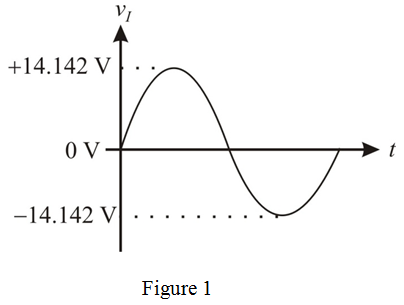
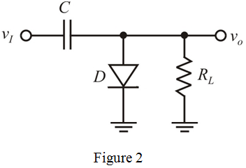
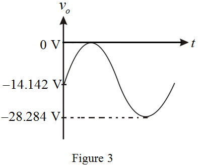

Consider the input voltage of sin wave is.
Calculate the peak value of the input sin wave.
Draw the circuit diagram of input sin wave.

The clamped capacitor uses an ideal diode, that is the diode voltage drop in conduction is zero, . The cathode (negative terminal) of the diode is connected to ground.
Draw the circuit diagram of clamping circuit.

For the positive input voltage, the diode conducts. Thus, the output voltage is zero in positive side and it clamps to the negative side. The capacitor charges when the diode conducts.
Draw the circuit diagram of output sin wave.

Determine the value of average dc value of the resulting output.
Thus, the average dc value of the resulting output, is .